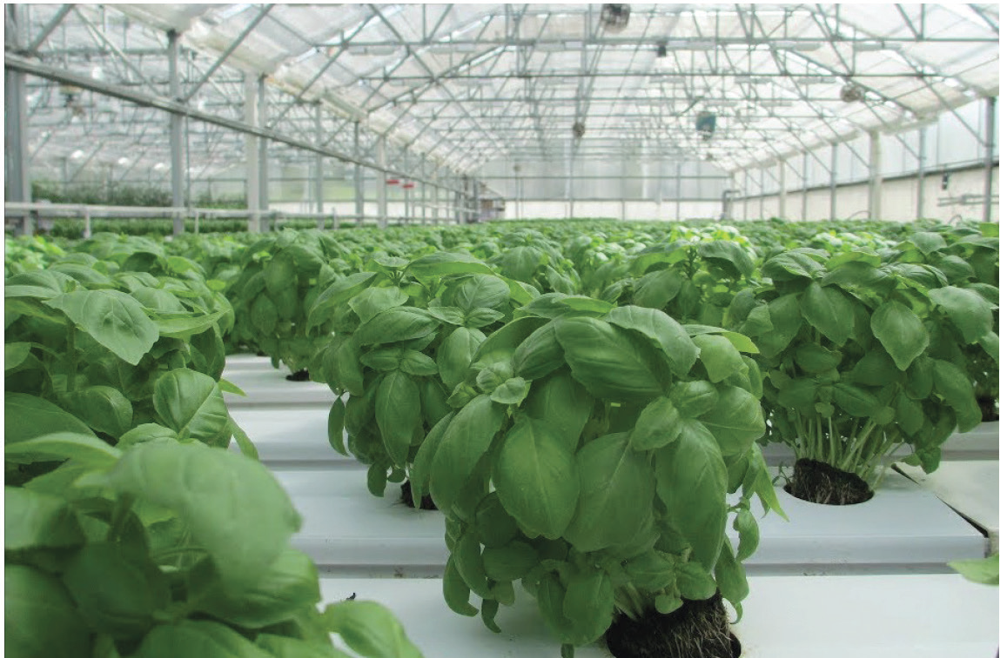
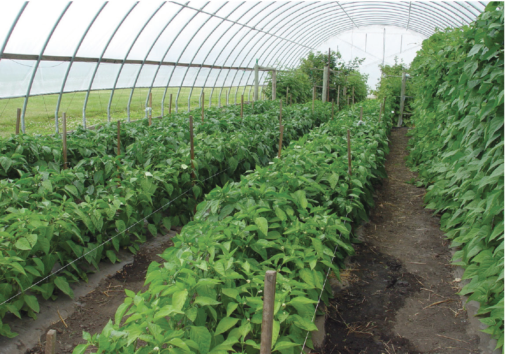

Activity 3.4
Structures for growing horticultural crops
Unlike other crops, many horticultural crops can be grown in varied seedbeds, structures, and growing media including greenhouse and screen houses (refer to Figures 3.71 and 3.72) or normal seedbeds (refer to Figures 3.73 (a) and (b)). In urban or peri-urban areas where land is a constraint, horticultural crops can be grown in improvised seedbeds. Improvised seedbeds involve the use of locally available materials in raising crops, for example, used containers, tyres, sacks and polythene bags packed with soil or other required growing media (refer to Figure 3.74 (a) - (d)). In addition, ready-made pots can be used in raising horticultural crops (refer to Figures 3.74 (e)). However, the use of ready-made bags and pots is relatively expensive compared to the use of locally available materials. Vertical or multi-storey gardening can also be used in areas with a shortage of land (refer to Figures 3.75 (a) and (b)).

